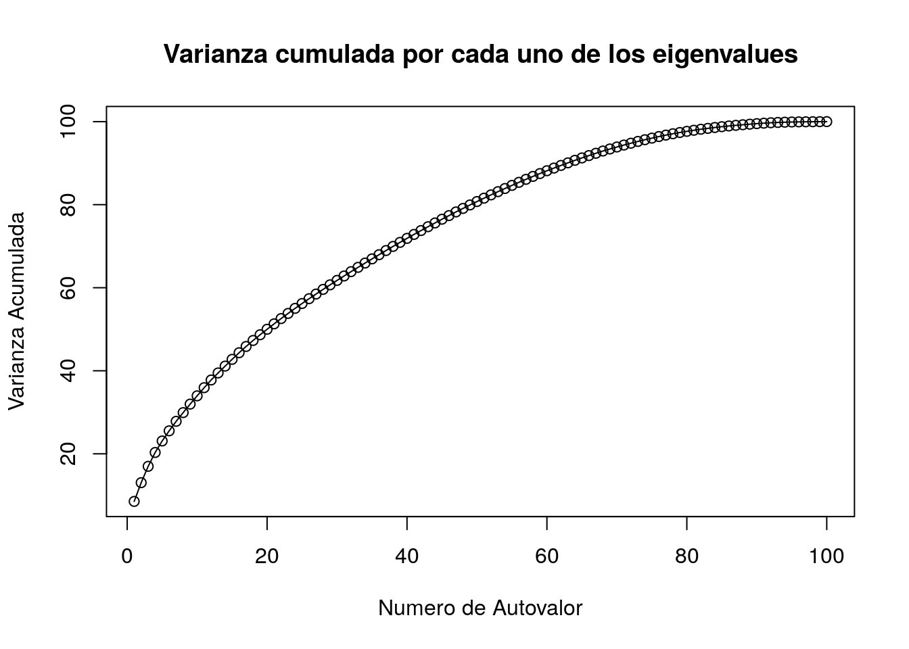

Intentaremos hacer una descomposición PCA de los datos del dataset para ver si es viable en nuestro dataset simplificar el número de variables a utilizar en los modelos (sobre todos en modelos que no son explicativos, tal y como SVM, y en los que ayuda esta reducción de dimensionalidad en los recursos computacionales utilizados por dicho modelo). Como tenemos variables de todo tipo (discretas, contínuas, categóricas, ordinales) utilizarmos una librería denominada PCAmixdata que es capaz de generar esta descomposición en valores principales mezclando todos los tipos de variable. Para ello, previamente hay que descomponer el dataset en variables de tipo cualitativas y cuantitativas. Para ello la propia librería tiene una función que automatiza esta tarea. El siguiente código realiza esta descomposición, tanto en el dataset completo como únicamente en los datos del dataset de Train:
library(PCAmixdata)
splitCompleto <- splitmix(dataSetTrainPCA)
X1SplitCompleto <- splitCompleto$X.quanti
X2SplitCompleto <- splitCompleto$X.quali
objetoPCAMIXCompleto <- PCAmix(X.quanti=X1SplitCompleto, X.quali=X2SplitCompleto,rename.level=TRUE, graph=FALSE,ndim=60)Mostramos un grafico con el incremento de varianza explicada por cada uno de los autoectores obtenidos en el anterior proceso:
plot(objetoPCAMIXCompleto$eig[,3], xlab = 'Numero de Autovalor', ylab = 'Varianza Acumulada', main = 'Varianza cumulada por cada uno de los eigenvalues')
lines(objetoPCAMIXCompleto$eig[,3])
Como vemos, con el 60% de las variables obtenemos una varianza acumulado del 80%. No obstante, si vemos el número de dimenosiones, vemos que para calcular este tipo de PCA se ha realizado un “one hot” encoding de las variables categóricas, y esto para alguno de los modelos (random forest, knn) no es conveniente. No obstante, para el modelo basado en SVM se podría probar a ver si con esta reducción de la dimensionalidad conseguimos resultados equivalentes. EN los modelos GLM y GAM, preferimos no utilizar este tipo de codificación debido a que se pierde interpretabilildad en el modelo.
Como ejemplo del uso de estas técnicas en un modelo de ML, entrenaremos un RF rápido para comprobar si la reducción de la dimensionalidad conlleva un modelo con similares poderes de predicción:
numeroDimOptimo = 60
splitTest <- splitmix(datasetTestPCA%>% dplyr::select(-c(GrupoPrecio)))
X1Test <- splitTest$X.quanti
X2Test <- splitTest$X.quali
#objetoPCAMIXTrain$eig
coordenadasPCATrain=as.data.table(cbind(objetoPCAMIXCompleto$ind$coord, GrupoPrecio= datasetTrainPCA %>% dplyr::select(c("GrupoPrecio")) ))
coordenadasPCATest=as.data.table(cbind(predict(objetoPCAMIXCompleto,X1Test,X2Test), GrupoPrecio=datasetTestPCA %>% dplyr::select(c("GrupoPrecio")) ))
# ahora la regresion por random forest con los componentes PCA
library(caret)
ctrl = trainControl(method="repeatedcv",
number=2,
repeats=1)
tGrid <- expand.grid(mtry = c(7))
rf_model_pca <- train(GrupoPrecio ~.,
data=coordenadasPCATrain,
method="rf",
nodesize= 30,
ntree =500,
do.trace= 10,
trControl=ctrl,
tuneGrid = tGrid,
verbose = FALSE
)## ntree OOB 1 2
## 10: 7.92% 0.95% 91.43%
## 20: 8.27% 1.65% 88.57%
## 30: 8.16% 1.41% 90.00%
## 40: 7.62% 0.59% 92.86%
## 50: 7.62% 0.82% 90.00%
## 60: 7.83% 0.82% 92.86%
## 70: 7.83% 0.82% 92.86%
## 80: 7.62% 0.82% 90.00%
## 90: 7.62% 0.82% 90.00%
## 100: 7.94% 0.94% 92.86%
## 110: 7.94% 0.71% 95.71%
## 120: 7.83% 0.59% 95.71%
## 130: 7.83% 0.59% 95.71%
## 140: 7.62% 0.35% 95.71%
## 150: 7.62% 0.35% 95.71%
## 160: 7.83% 0.47% 97.14%
## 170: 8.05% 0.59% 98.57%
## 180: 7.73% 0.47% 95.71%
## 190: 7.83% 0.59% 95.71%
## 200: 7.83% 0.47% 97.14%
## 210: 7.73% 0.47% 95.71%
## 220: 7.73% 0.47% 95.71%
## 230: 8.05% 0.59% 98.57%
## 240: 8.05% 0.59% 98.57%
## 250: 7.94% 0.47% 98.57%
## 260: 8.05% 0.59% 98.57%
## 270: 8.05% 0.59% 98.57%
## 280: 8.05% 0.59% 98.57%
## 290: 8.05% 0.59% 98.57%
## 300: 8.05% 0.59% 98.57%
## 310: 8.05% 0.59% 98.57%
## 320: 8.16% 0.59%100.00%
## 330: 8.16% 0.59%100.00%
## 340: 8.16% 0.59%100.00%
## 350: 7.94% 0.35%100.00%
## 360: 8.16% 0.59%100.00%
## 370: 8.16% 0.59%100.00%
## 380: 7.94% 0.47% 98.57%
## 390: 8.05% 0.59% 98.57%
## 400: 8.05% 0.59% 98.57%
## 410: 8.16% 0.59%100.00%
## 420: 8.16% 0.59%100.00%
## 430: 8.05% 0.47%100.00%
## 440: 8.05% 0.47%100.00%
## 450: 8.05% 0.47%100.00%
## 460: 7.94% 0.47% 98.57%
## 470: 8.16% 0.59%100.00%
## 480: 8.16% 0.59%100.00%
## 490: 8.16% 0.59%100.00%
## 500: 8.16% 0.59%100.00%
## ntree OOB 1 2
## 10: 8.55% 2.26% 84.29%
## 20: 7.73% 1.18% 87.14%
## 30: 7.52% 0.94% 87.14%
## 40: 7.52% 0.83% 88.57%
## 50: 7.41% 0.59% 90.00%
## 60: 7.41% 0.47% 91.43%
## 70: 7.41% 0.59% 90.00%
## 80: 7.52% 0.47% 92.86%
## 90: 7.41% 0.35% 92.86%
## 100: 7.41% 0.35% 92.86%
## 110: 7.30% 0.35% 91.43%
## 120: 7.41% 0.35% 92.86%
## 130: 7.30% 0.35% 91.43%
## 140: 7.30% 0.35% 91.43%
## 150: 7.41% 0.35% 92.86%
## 160: 7.52% 0.35% 94.29%
## 170: 7.41% 0.35% 92.86%
## 180: 7.52% 0.35% 94.29%
## 190: 7.30% 0.24% 92.86%
## 200: 7.30% 0.24% 92.86%
## 210: 7.52% 0.35% 94.29%
## 220: 7.41% 0.35% 92.86%
## 230: 7.19% 0.35% 90.00%
## 240: 7.08% 0.24% 90.00%
## 250: 7.08% 0.24% 90.00%
## 260: 7.08% 0.12% 91.43%
## 270: 7.08% 0.12% 91.43%
## 280: 7.08% 0.12% 91.43%
## 290: 6.97% 0.00% 91.43%
## 300: 7.08% 0.12% 91.43%
## 310: 7.08% 0.12% 91.43%
## 320: 7.08% 0.12% 91.43%
## 330: 7.08% 0.12% 91.43%
## 340: 7.08% 0.12% 91.43%
## 350: 7.08% 0.12% 91.43%
## 360: 7.08% 0.12% 91.43%
## 370: 7.08% 0.12% 91.43%
## 380: 7.08% 0.12% 91.43%
## 390: 7.08% 0.12% 91.43%
## 400: 7.19% 0.12% 92.86%
## 410: 7.19% 0.12% 92.86%
## 420: 7.08% 0.12% 91.43%
## 430: 7.08% 0.12% 91.43%
## 440: 7.08% 0.12% 91.43%
## 450: 7.19% 0.12% 92.86%
## 460: 7.08% 0.12% 91.43%
## 470: 7.19% 0.12% 92.86%
## 480: 7.19% 0.12% 92.86%
## 490: 7.19% 0.12% 92.86%
## 500: 7.19% 0.12% 92.86%
## ntree OOB 1 2
## 10: 8.07% 2.14% 79.86%
## 20: 7.57% 1.65% 79.29%
## 30: 7.24% 1.00% 82.86%
## 40: 6.86% 0.88% 79.29%
## 50: 7.08% 1.06% 80.00%
## 60: 6.86% 1.00% 77.86%
## 70: 6.91% 1.00% 78.57%
## 80: 7.19% 0.88% 83.57%
## 90: 7.24% 0.88% 84.29%
## 100: 7.19% 0.82% 84.29%
## 110: 7.19% 0.77% 85.00%
## 120: 7.35% 0.77% 87.14%
## 130: 7.29% 0.71% 87.14%
## 140: 7.51% 0.94% 87.14%
## 150: 7.35% 0.77% 87.14%
## 160: 7.35% 0.82% 86.43%
## 170: 7.51% 0.82% 88.57%
## 180: 7.68% 0.82% 90.71%
## 190: 7.62% 0.88% 89.29%
## 200: 7.51% 0.77% 89.29%
## 210: 7.46% 0.77% 88.57%
## 220: 7.40% 0.71% 88.57%
## 230: 7.51% 0.71% 90.00%
## 240: 7.35% 0.65% 88.57%
## 250: 7.24% 0.59% 87.86%
## 260: 7.46% 0.71% 89.29%
## 270: 7.29% 0.59% 88.57%
## 280: 7.24% 0.59% 87.86%
## 290: 7.35% 0.53% 90.00%
## 300: 7.35% 0.53% 90.00%
## 310: 7.46% 0.65% 90.00%
## 320: 7.40% 0.59% 90.00%
## 330: 7.40% 0.59% 90.00%
## 340: 7.40% 0.65% 89.29%
## 350: 7.40% 0.59% 90.00%
## 360: 7.35% 0.59% 89.29%
## 370: 7.46% 0.65% 90.00%
## 380: 7.46% 0.65% 90.00%
## 390: 7.51% 0.65% 90.71%
## 400: 7.40% 0.65% 89.29%
## 410: 7.35% 0.59% 89.29%
## 420: 7.46% 0.65% 90.00%
## 430: 7.46% 0.65% 90.00%
## 440: 7.40% 0.59% 90.00%
## 450: 7.40% 0.59% 90.00%
## 460: 7.29% 0.47% 90.00%
## 470: 7.19% 0.35% 90.00%
## 480: 7.40% 0.59% 90.00%
## 490: 7.29% 0.47% 90.00%
## 500: 7.35% 0.53% 90.00%# y por último , genero el mismo random forest con todos los componenes
rf_model_sin_pca <-train(GrupoPrecio ~.,
data=datasetTrainPCA,
method="rf",
nodesize= 30,
ntree =500,
do.trace= 10,
trControl=ctrl,
tuneGrid = tGrid,
verbose = FALSE,
)## ntree OOB 1 2
## 10: 5.29% 0.95% 60.61%
## 20: 6.31% 0.71% 74.29%
## 30: 6.20% 0.59% 74.29%
## 40: 6.09% 0.47% 74.29%
## 50: 5.33% 0.24% 67.14%
## 60: 4.90% 0.24% 61.43%
## 70: 5.22% 0.24% 65.71%
## 80: 5.22% 0.12% 67.14%
## 90: 5.44% 0.24% 68.57%
## 100: 5.11% 0.24% 64.29%
## 110: 4.79% 0.12% 61.43%
## 120: 5.01% 0.12% 64.29%
## 130: 4.90% 0.12% 62.86%
## 140: 5.01% 0.24% 62.86%
## 150: 5.11% 0.00% 67.14%
## 160: 5.33% 0.00% 70.00%
## 170: 5.22% 0.00% 68.57%
## 180: 5.22% 0.00% 68.57%
## 190: 5.44% 0.00% 71.43%
## 200: 5.44% 0.00% 71.43%
## 210: 5.44% 0.00% 71.43%
## 220: 5.33% 0.00% 70.00%
## 230: 5.22% 0.00% 68.57%
## 240: 5.11% 0.00% 67.14%
## 250: 5.01% 0.00% 65.71%
## 260: 5.01% 0.00% 65.71%
## 270: 4.90% 0.00% 64.29%
## 280: 5.01% 0.00% 65.71%
## 290: 5.01% 0.00% 65.71%
## 300: 4.90% 0.00% 64.29%
## 310: 4.90% 0.00% 64.29%
## 320: 4.90% 0.00% 64.29%
## 330: 5.11% 0.00% 67.14%
## 340: 5.11% 0.00% 67.14%
## 350: 5.11% 0.00% 67.14%
## 360: 4.90% 0.00% 64.29%
## 370: 5.01% 0.00% 65.71%
## 380: 5.11% 0.00% 67.14%
## 390: 4.90% 0.00% 64.29%
## 400: 5.01% 0.00% 65.71%
## 410: 4.90% 0.00% 64.29%
## 420: 5.11% 0.00% 67.14%
## 430: 5.11% 0.00% 67.14%
## 440: 5.01% 0.00% 65.71%
## 450: 4.79% 0.00% 62.86%
## 460: 4.90% 0.00% 64.29%
## 470: 4.90% 0.00% 64.29%
## 480: 4.90% 0.00% 64.29%
## 490: 4.90% 0.00% 64.29%
## 500: 4.90% 0.00% 64.29%
## ntree OOB 1 2
## 10: 4.41% 0.59% 52.24%
## 20: 6.10% 0.35% 75.71%
## 30: 6.43% 0.12% 82.86%
## 40: 5.99% 0.00% 78.57%
## 50: 5.34% 0.12% 68.57%
## 60: 5.01% 0.00% 65.71%
## 70: 4.14% 0.00% 54.29%
## 80: 4.68% 0.00% 61.43%
## 90: 4.58% 0.12% 58.57%
## 100: 5.23% 0.12% 67.14%
## 110: 4.79% 0.12% 61.43%
## 120: 4.79% 0.12% 61.43%
## 130: 4.58% 0.12% 58.57%
## 140: 4.58% 0.12% 58.57%
## 150: 4.90% 0.12% 62.86%
## 160: 4.90% 0.12% 62.86%
## 170: 4.90% 0.12% 62.86%
## 180: 5.01% 0.12% 64.29%
## 190: 5.23% 0.12% 67.14%
## 200: 4.79% 0.12% 61.43%
## 210: 4.90% 0.12% 62.86%
## 220: 4.68% 0.12% 60.00%
## 230: 5.01% 0.12% 64.29%
## 240: 4.79% 0.12% 61.43%
## 250: 4.79% 0.12% 61.43%
## 260: 4.58% 0.00% 60.00%
## 270: 4.79% 0.00% 62.86%
## 280: 4.79% 0.00% 62.86%
## 290: 4.79% 0.00% 62.86%
## 300: 5.12% 0.12% 65.71%
## 310: 5.12% 0.12% 65.71%
## 320: 5.23% 0.12% 67.14%
## 330: 5.23% 0.12% 67.14%
## 340: 5.34% 0.12% 68.57%
## 350: 5.45% 0.12% 70.00%
## 360: 5.45% 0.12% 70.00%
## 370: 5.45% 0.12% 70.00%
## 380: 5.56% 0.12% 71.43%
## 390: 5.45% 0.12% 70.00%
## 400: 5.45% 0.12% 70.00%
## 410: 5.45% 0.12% 70.00%
## 420: 5.45% 0.12% 70.00%
## 430: 5.34% 0.00% 70.00%
## 440: 5.34% 0.00% 70.00%
## 450: 5.45% 0.12% 70.00%
## 460: 5.34% 0.00% 70.00%
## 470: 5.23% 0.00% 68.57%
## 480: 5.45% 0.00% 71.43%
## 490: 5.56% 0.12% 71.43%
## 500: 5.56% 0.12% 71.43%
## ntree OOB 1 2
## 10: 4.23% 0.83% 45.32%
## 20: 3.81% 0.59% 42.86%
## 30: 2.78% 0.24% 33.57%
## 40: 3.43% 0.24% 42.14%
## 50: 2.99% 0.00% 39.29%
## 60: 2.40% 0.06% 30.71%
## 70: 2.72% 0.06% 35.00%
## 80: 1.96% 0.06% 25.00%
## 90: 1.74% 0.06% 22.14%
## 100: 1.80% 0.00% 23.57%
## 110: 2.12% 0.06% 27.14%
## 120: 2.01% 0.06% 25.71%
## 130: 2.12% 0.00% 27.86%
## 140: 2.12% 0.00% 27.86%
## 150: 1.85% 0.00% 24.29%
## 160: 1.85% 0.00% 24.29%
## 170: 2.01% 0.00% 26.43%
## 180: 2.18% 0.00% 28.57%
## 190: 2.23% 0.00% 29.29%
## 200: 2.50% 0.00% 32.86%
## 210: 2.67% 0.00% 35.00%
## 220: 2.50% 0.00% 32.86%
## 230: 2.50% 0.00% 32.86%
## 240: 2.67% 0.00% 35.00%
## 250: 2.56% 0.00% 33.57%
## 260: 2.45% 0.00% 32.14%
## 270: 2.50% 0.00% 32.86%
## 280: 2.45% 0.00% 32.14%
## 290: 2.34% 0.00% 30.71%
## 300: 2.61% 0.00% 34.29%
## 310: 2.56% 0.00% 33.57%
## 320: 2.61% 0.00% 34.29%
## 330: 2.61% 0.00% 34.29%
## 340: 2.72% 0.00% 35.71%
## 350: 2.61% 0.00% 34.29%
## 360: 2.67% 0.00% 35.00%
## 370: 2.72% 0.00% 35.71%
## 380: 2.72% 0.00% 35.71%
## 390: 2.61% 0.00% 34.29%
## 400: 2.50% 0.00% 32.86%
## 410: 2.45% 0.00% 32.14%
## 420: 2.34% 0.00% 30.71%
## 430: 2.40% 0.00% 31.43%
## 440: 2.34% 0.00% 30.71%
## 450: 2.34% 0.00% 30.71%
## 460: 2.29% 0.00% 30.00%
## 470: 2.34% 0.00% 30.71%
## 480: 2.50% 0.00% 32.86%
## 490: 2.67% 0.00% 35.00%
## 500: 2.45% 0.00% 32.14%rf_model_pca$results## mtry Accuracy Kappa AccuracySD KappaSD
## 1 7 0.9243322 0.09771624 0.002367801 0.07651823rf_model_sin_pca$results## mtry Accuracy Kappa AccuracySD KappaSD
## 1 7 0.9488254 0.4673004 0.01081729 0.1605745Comprobamos que el accuracy en ambos modelos es similar con un 40% de reducción en el número de variables.